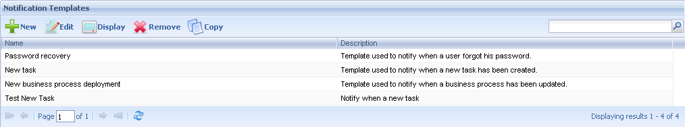
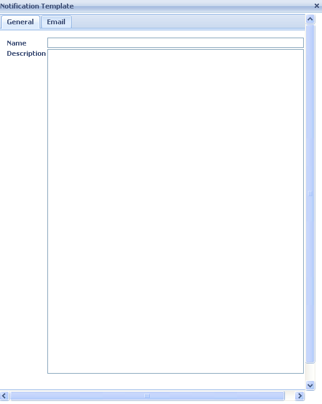
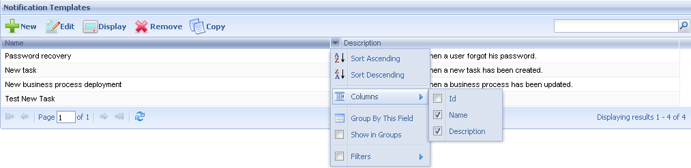

Notification templates
The Notification templates application allows setting up the different work templates used in the system. The following figure shows this application interface: 
The following sections describe the different components making up the Notification templates application. Button ToolbarNew: The definition of the new template is performed by this button. By clicking on this button the following dialog is displayed:  In this dialog, the user must specify an exclusive name for the new template and optionally a description the same.
Besides, in the Email tab, the user must customize notification: To, subject and body using process variables. Once this template data have been entered the user must press the OK button. Edit: By selecting a notification template from the grid and pressing this button, the user accesses a dialog that will allow him modifying the selected template. This dialog is the same shown when creating a new notification template and allows modifying all the data of the selected template. Remove: To delete a Notification template the user must first select it from the notification template grid and then press this button. The user accesses a dialog that will allow confirming the deletion. By clicking on the OK button, the user confirms the template deletion. Display: To visualize the information of a notification the user must first select it and then press the "Display" button. Notification templates Grid
|

| Backlinks |
| Process Manager |